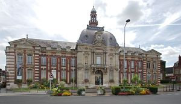
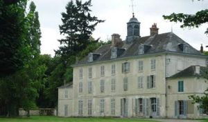
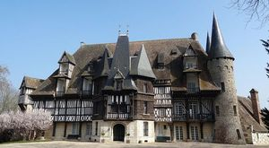
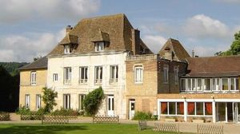
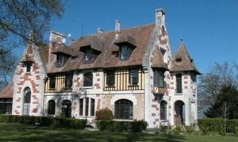
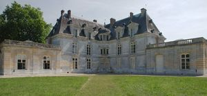

Recensement Jean-Claude Truffet






| Département | 27 — Eure |
| Canton | Louviers |
| Commune | Louviers |
| Type d'édifice | Château |
| Période d'origine | XVII |
| Coordonnées GPS | 49° 12' 9,39" Nord, 1° 10' 12,51" Est La Haye le Comte grav-5-6 gps 49° 11' 54? nord, 1° 08' 56? est |
Deux châteaux dans cet article-St-Hilaire et la Haye le Comte. ST-HILAIRE, au début du XVe siècle, le domaine fait partie du fief de lÉpervier, possédé par Roger de Maldéré. Après quoi le domaine est acquis par Jean Le Roux, un bourgeois rouennais, qui le transmet à Robert Le Roux sieur de lÉpervier. Sa petite-nièce Catherine du Jardin en héritera en 1582, avant d'épouser Charles Romé. Pierre Romé seigneur du Thuit et trésorier de France au bureau de Rouen sous Louis XIII en héritera à son tour. En 1681, Nicolas Romé réunit ses fiefs de lÉpervier, Maupertuis, Bouteiller et Folleville sous le nom de Folleville jusqu'en 1692, où Marie Romé épouse Pierre-Jacques Le Vicomte de Saint-Hilaire. Au XVIIIe siècle, Marie-Angélique hérite de Joseph Le vicomte de Saint-Hilaire et se marie au marquis Antoine de Marguerit. Au milieu du XIXe siècle, leur descendant et comte Odoard du Hazey vend le domaine à M. Eugène Léon Sée (18 octobre 1850), sous-préfet de Louviers entre 1879 et 1882, qui fait construire une grande bâtisse néo-classique en 1880. Il est devenu au XVIIe siècle la propriété de Pierre Le Vicomte, sire de Saint Hilaire. En 1901, Jules Rodolphe Audresset (nom du propriétaire de la dernière filature à Louviers) achète le bâtiment, puis le transmet à sa fille Cécile. Elle épouse Pierre Réveilhac Entre 1907 et 1909, la famille Réveilhac la fait modifier par larchitecte Henri Jacquelin. Vers 1925, le major américain Walter Cotchett y ajoute un logement séparé dans le même style et une piscine. Le château est abandonné après les années 1960, puis racheté en 1989 pour être restauré, inscription par arrêté du 13 septembre 2002.
ST-HILAIRE, le corps de logis est en pierre de trois niveaux avec des combles à la Mansart, doté d'un avant-corps à pans coupés en brique, bordé par une terrasse et mâchicoulis, à l'origine se trouvait un manoir seigneurial dit de l'Epervier, attesté au XVe siècle. Vers 1880, Eugène-Léon Sée, fait construire une grosse bâtisse de neuf travées, deux étages et comble brisé dans le style du milieu du XIXe siècle. Entre 1907 et 1909, la famille Réveilhac la fait modifier par larchitecte Henri Jacquelin qui la rhabille dans le style néo-normand avec des colombages issus de vieilles maisons dEvreux et ajoute tourelles, échauguettes et galeries en accentuant la pente des toits. Outre le bâtiment principal, il existe un bâtiment adjacent dit chapelle et des dépendances, pavillon, communs, colombier. Le parc est partiellement boisé. Ce château est représentatif de larchitecture régionaliste néo-normande du début du XXe siècle. Son côté grandiose est mis en valeur par la vaste pelouse qui le sépare de la route. Éléments protégés MH : le logis en totalité, y compris le bâtiment adjacent dit "chapelle" : inscription par arrêté du 13 septembre 2002. La HAYE le COMTE à un K.M au sud petit château construit au XIIe siècle pour Calevau comte de Meulan, il fut détruit, il subsiste aucun vestige. Vers 1647, Anne le Métayer avait fait construire un pavillon au bout de son logis. Colombier polygonal en pan de bois datant du XVIe ou du XVIIe siècle. Logis actuel à deux étages carrés du XIXe siècle postérieur à 1823.
Famille Réveilhac
"
St-Hilaire grav-1-2-3-4 GPS : 49° 12' 9,39" Nord, 1° 10' 12,51" Est La Haye le Comte grav-5-6 gps 49° 11' 54? nord, 1° 08' 56? est